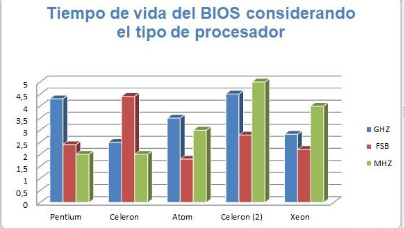

Acceso al BIOS para configurar dispositivos y secuencias de arranque
Acceso al BIOS para configurar dispositivos y secuencias de arranque
La BIOS es un programa que ya está instalado en el ordenador, en concreto en su placa base. Siempre se carga de forma automática después de que aprietes el botón de encendido. Lo primero que hace es un chequeo de todos los componentes de hardware.
Si encuentra algún fallo, se encarga de avisarte a través de un mensaje en pantalla, o mediante los “tradicionales” pitidos de alarma
En algunas ocasiones necesitamos arrancar el PC desde un CD o DVD, por ejemplo, para instalar un nuevo sistema operativo o en caso el sistema esté dañado y necesitemos repararlo utilizando un disco de reparación. Para que esto sea posible, previamente debemos entrar a la BIOS y modificar la secuencia de arranque de los dispositivos (Disco duro, CD/DVD, disquete, dispositivo USB, red...), si no el PC iniciará como siempre desde el disco duro, aun cuando hayamos insertado el CD / DVD en la lectora.
Modificar la secuencia de arranque
Iniciamos o reiniciamos el PC y presionamos la tecla F2 o Esc, u otra tecla que aparezca indicada en la pantalla para entrar al setup de la BIOS.
Desde la unidad de CD/DVD - éste puede ser designado por:
-IDE
-CD
-DVD
-CDDrive
- DVD Drive
Según el modelo (ej: _NEC DVD_RW ND-3550A)
Desde un lector de disquetes - éste puede ser designado por:
- floppy disk
- FD
- Según el modelo
Tiempo de vida del BIOS considerando el tipo de procesador:
Pentium.- Pentium ha sido usado como nombre para varias generaciones diferentes de procesadores. Los procesadores Pentium de la generación actual son procesadores de doble núcleo energéticamente eficiente y diseñado para computadoras de escritorio. Los procesadores Pentium tienen indicadores numéricos que, al igual que otros procesadores Intel, indican niveles más altos de características con números de series superiores.
Procesador Intel Pentium 4 630 compatible con la tecnología HT (caché de 2 M, 3,00 GHz, FSB de 800 MHz)
Celeron.- Estos procesadores están diseñados para su uso en computadoras de escritorio o P.C. de escritorio, enfocadas al uso familiar principalmente para actividades de navegación web y cómputo básico o no especializado.
Procesador Intel Celeron 585 (caché de 1 M, 2,16 GHz, FSB de 667 MHz)
Procesadores tipo Atom.- Los procesadores Intel Atom son procesadores de bajo consumo energético y están diseñados para usarse en netbooks y otros dispositivos de cómputo especializados en redes, es decir, en máquinas en donde la vida útil de la batería, así como el consumo de energía, son más importantes que el poder de procesamiento en sí.
Procesador Intel Atom D2500 (caché de 1 MB, 1,86 GHz)
Celeron.- Estos procesadores están diseñados para su uso en computadoras de escritorio o P.C. de escritorio, enfocadas al uso familiar principalmente para actividades de navegación web y cómputo básico o no especializado.
Procesador Intel Celeron para equipos portátiles, 1.40 GHz, caché de 256K, FSB de 400 MH
Xeon .-De estos procesadores especializados en servidores existen de un núcleo, dos núcleos y varios núcleos, aumentando las capacidades de procesamiento de datos.
64-bit Intel Xeon Processor 2.83 GHz, 4M Cache, 667 MHz FSB
HP de un equipo con procesador Intel Core i3.
Para cambiar el modo de arranque hacemos lo siguiente:
1.- Se enciende el equipo
2.- Se lección la tecla f2
3.- Observamos que está en el BIOS, nos movemos con las teclas de direcciones hacia la opción de Boot Sequence para configurar la opción, la cual puede ser dependiendo de lo que haga el usuario, ya sea un formateo, una instalación de un sistema operativo y el medio en que lo haga
4.- Luego presiona ESC para salir del setup
5.- Finalmente nos desplazamos con la flecha derecha hacia Save/Exit y presionamos Enter para guardar los cambios efectuados y salir del setup.
6.- El sistema se reiniciará.
Grafica del tiempo de vida de la maquina considerando el tipo de procesador
